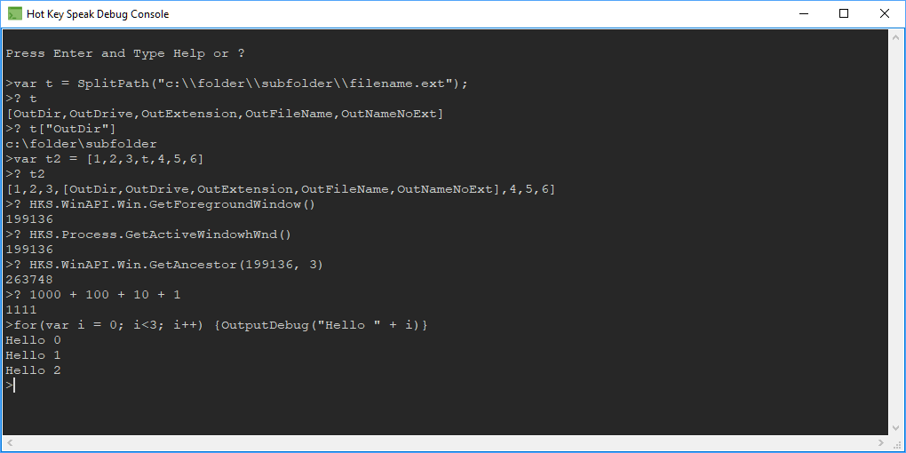

The debug console is used to display and log information about what is happening in the application. A lot of information can be logged to the console according to the settings. The system can be used to figure out what is happening when things are not going right.
The Debug Console output detail is defined in the Options Window.
You can access to Debug Console Window from the Options Window.

The console is interactive, meaning you can type in it and execute actions and even debug code similarly as you would in Chrome or Netscape's console...
You can type a command on a chevron (>) line.
The commands are listed if you type help{enter} or ?{enter}.
As a programmer writing rules, you would use the console to trace out variable values to make sure everything is fine.
As a programmer writing rules, you can use the console and test out coding ideas as the console does perform in line JScript interpretation.
Using OutputDebug() in your Action Code will cause the Debug Console to appear an display the text, or variable.
Using ? expression or print expression essentially does the same thing as OutputDebug(expression) while in the console.
The image above is pretty self explaining as to how you can use the feature.
The interpreter in the console that evaluates expression works In-Context with the Application Item currently active, so all the global variables and functions defined by it and any code that ran through any Activated Action should be available.
Using HKS.Debug.BreakPoint() in your code can allow you to launch the Debug Console from a location of interest in the code, see the function help for details.